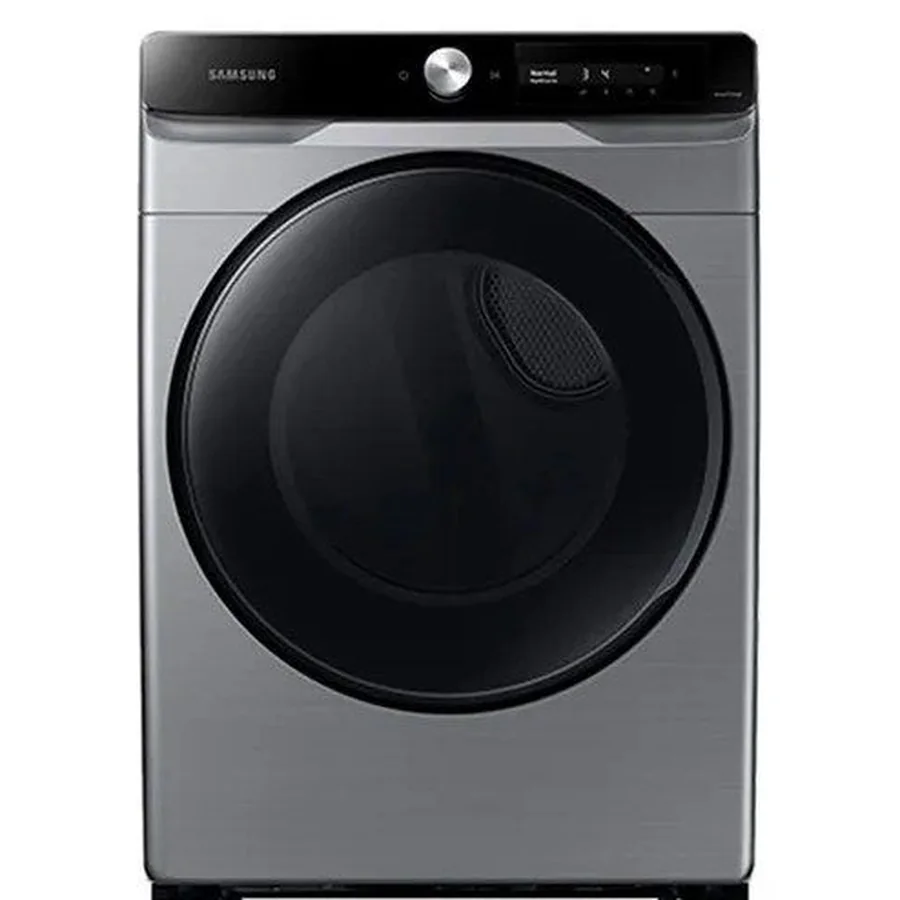

Imágenes de referencia de equipos Samsung.
Servicio a domicilio en Itchimbía
Reparamos secadoras Samsung en Itchimbía, centro de Quito. Es una zona mixta, con casas, edificios y comercios. Te pedimos la dirección y alguna referencia para llegar sin demoras.
Fallas que más nos consultan en Itchimbía
- Hace ruido o golpea Revisar pronto
Rodillos, correa o rodamiento desgastados, o prendas atrapadas. - Se detiene a mitad del ciclo Revisar pronto
Sobrecalentamiento por ducto tapado, sensor de temperatura o puerta que no cierra bien. - No enciende Urgente
Tomacorriente, botón de inicio, fusible térmico o tarjeta de control. - La ropa sale con olor o pelusa Vigilar
Filtro sucio, ducto con residuos o suavizante acumulado.
Qué hacemos en la visita
- Revisamos el equipo en su lugar de uso
- Te explicamos la causa de la falla
- Confirmamos el costo antes de reparar
- Reparamos y probamos el funcionamiento
Particularidades de Quito para secadoras
Muchas secadoras eléctricas usan 220 V y breaker propio; en edificios de Quito confirma que la toma y el breaker sean los indicados antes de culpar al equipo.
Referencias de la zona
Cómo pedir la visita
Escríbenos por WhatsApp con la marca y el modelo, qué falla presenta, tu dirección en Itchimbía y una foto de la etiqueta. Te respondemos con el siguiente paso.
Preguntas frecuentes
¿Reparan secadoras Samsung en Itchimbía?
Sí, atendemos Itchimbía y sus alrededores. Escríbenos tu dirección y coordinamos.
¿Qué falla es la más común en secadoras?
Entre las que más nos consultan: hace ruido o golpea, se detiene a mitad del ciclo y no enciende.
¿Dan el costo antes de reparar?
Sí. Primero diagnosticamos y te informamos el costo antes de continuar.